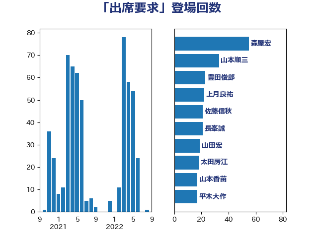

単語「出席要求」

| 森屋宏 | 自由民主党 | 55 回 |
| 山本順三 | 自由民主党 | 33 回 |
| 豊田俊郎 | 自由民主党 | 23 回 |
| 上月良祐 | 自由民主党 | 22 回 |
| 佐藤信秋 | 自由民主党 | 21 回 |
| 長峯誠 | 自由民主党 | 21 回 |
| 山田宏 | 自由民主党 | 19 回 |
| 太田房江 | 自由民主党 | 18 回 |
| 山本香苗 | 公明党 | 17 回 |
| 平木大作 | 公明党 | 17 回 |
| 矢倉克夫 | 公明党 | 15 回 |
| 長浜博行 | 無所属 | 14 回 |
| 斎藤嘉隆 | 立憲民主党 | 13 回 |
| 長谷川岳 | 自由民主党 | 13 回 |
| 馬場成志 | 自由民主党 | 13 回 |
| 石井浩郎 | 自由民主党 | 11 回 |
| 石橋通宏 | 立憲民主党 | 10 回 |
| 徳永エリ | 立憲民主党 | 9 回 |
| 青木一彦 | 自由民主党 | 7 回 |
| 松村祥史 | 自由民主党 | 6 回 |
| 舟山康江 | 国民民主党 | 6 回 |
| 野田国義 | 立憲民主党 | 6 回 |
| 古川俊治 | 自由民主党 | 5 回 |
| 新妻秀規 | 公明党 | 5 回 |
| 杉尾秀哉 | 立憲民主党 | 5 回 |
| 吉田忠智 | 立憲民主党 | 4 回 |
| 宮沢洋一 | 自由民主党 | 4 回 |
| 松下新平 | 自由民主党 | 4 回 |
| 野村哲郎 | 自由民主党 | 4 回 |
| 鶴保庸介 | 自由民主党 | 4 回 |
| 佐々木さやか | 公明党 | 3 回 |
| 山谷えり子 | 自由民主党 | 3 回 |
| 林芳正 | 自由民主党 | 3 回 |
| 鈴木宗男 | 日本維新の会 | 2 回 |
| 倉林明子 | 日本共産党 | 1 回 |
| 小西洋之 | 立憲民主党 | 1 回 |
| 滝波宏文 | 自由民主党 | 1 回 |
| 石原正敬 | 自由民主党 | 1 回 |
| 福岡資麿 | 自由民主党 | 1 回 |